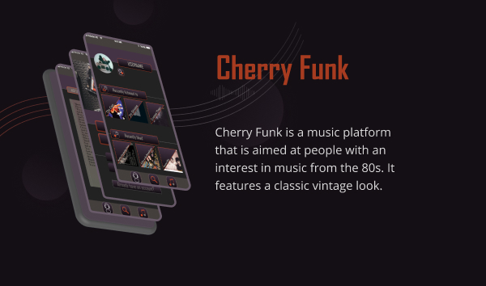
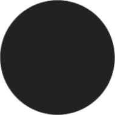
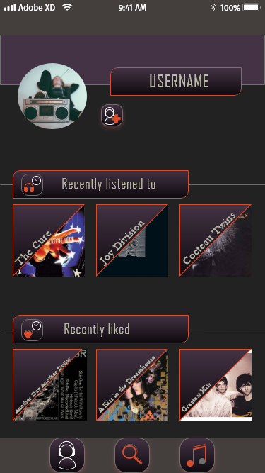
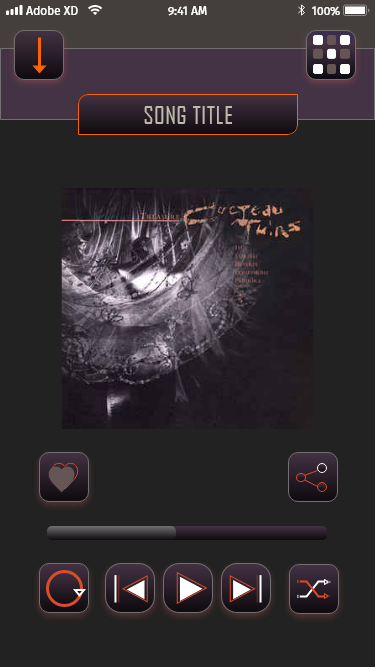
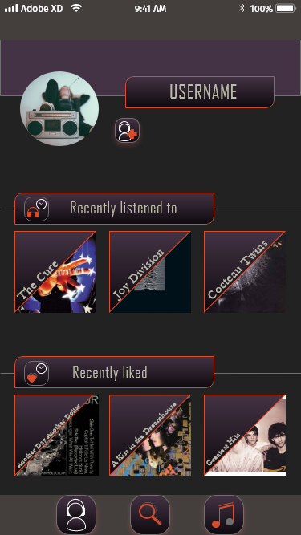
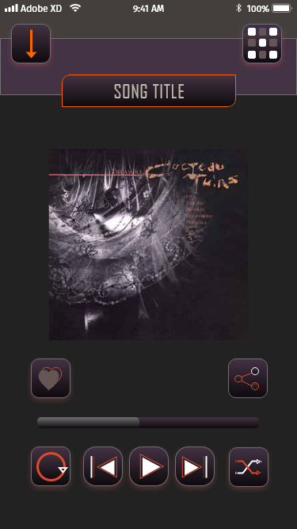

CherryFunk

Objective
I have chosen to create a music app because I deeply care about music (a.o. Post-Punk from the 80s) and am already familiar with similar apps. An initial idea of mine is to use a rather dark, sombre colour palette (violett – black) as this seems to best fit the “80s atmosphere“. Maybe the app would also profit from a rather unconventional design, including a.o. a cassette tape on the first screen.
MVP
These are the key functionalities of my app:
- Start, pause, skip a song
- Regulate different audio options
- Add a song to “Favourite Songs“
- Create Track/Album/Artist Lists
- Share a song to social media
- Create a profile
UI Style Guide (Excerpt)
Colours
I opted for this colour palette because it looks coherent. I used the colour palette generator at deGraeve.com. Orange is an innovative, not too overused colour and looks "sexy".
Main Colour
Supporting Colour

Accent Colour 1

Accent Colour 2

Buttons
Primary Button
Secondary Button
Tertiary Button
Final Design
 



Please find the full case study at
My Behance Profile